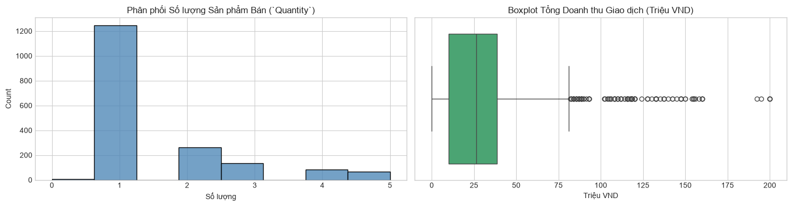
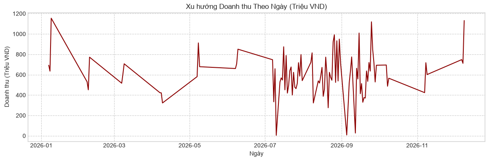
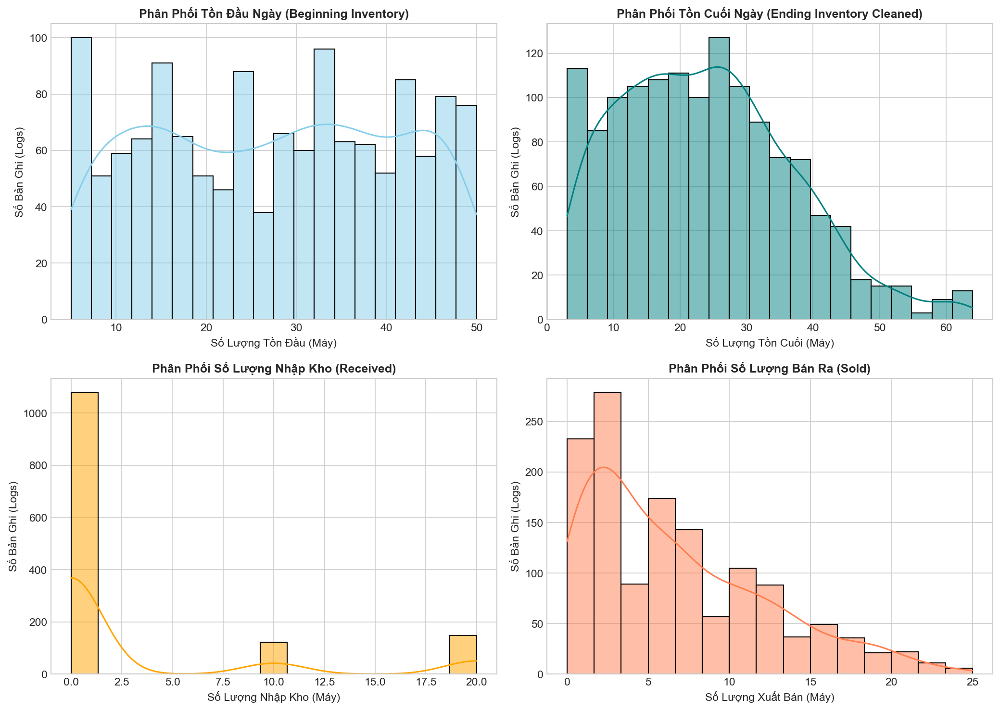
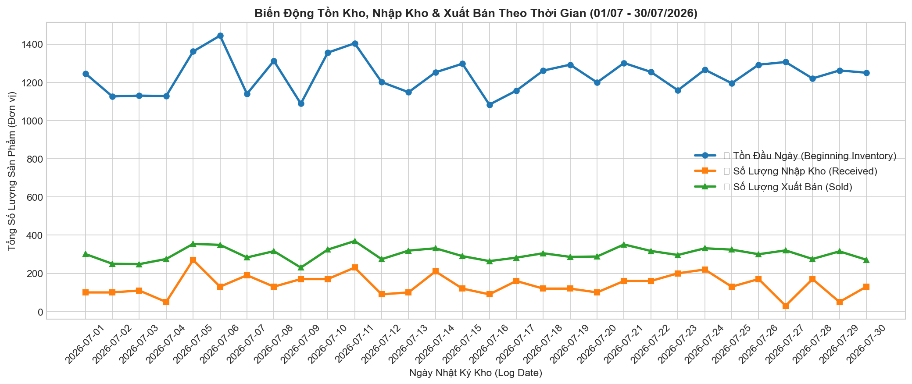
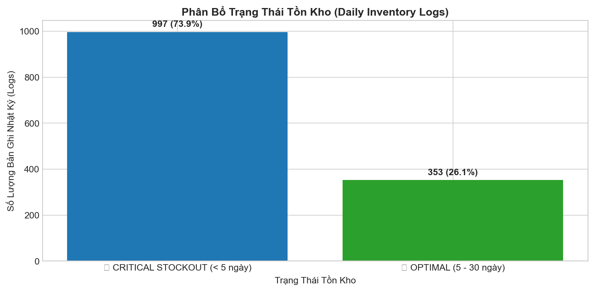
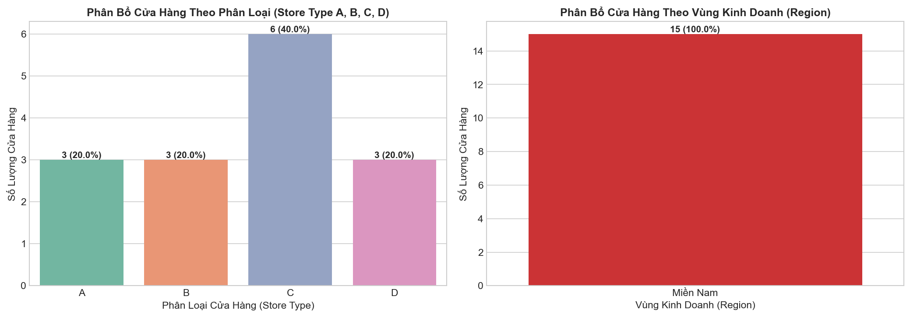
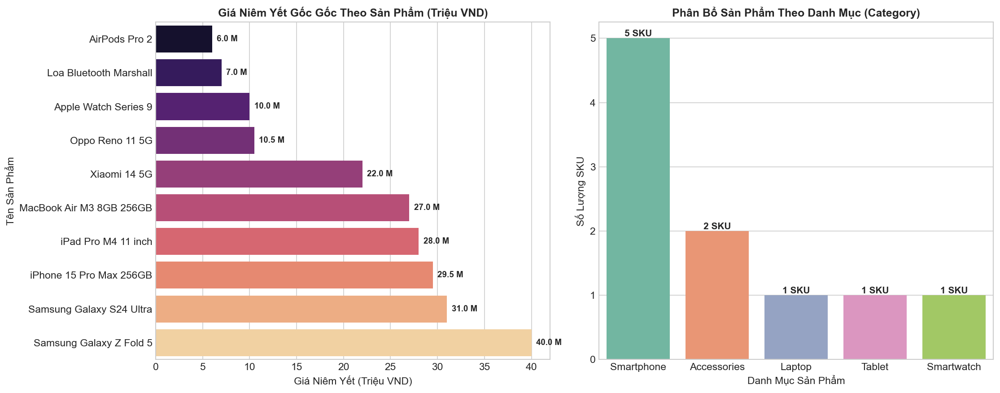
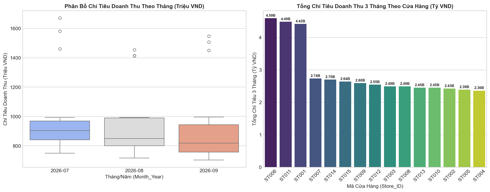
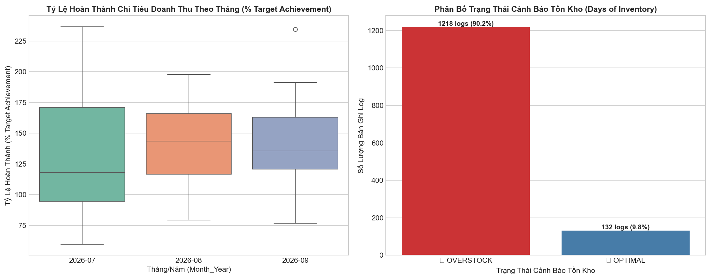
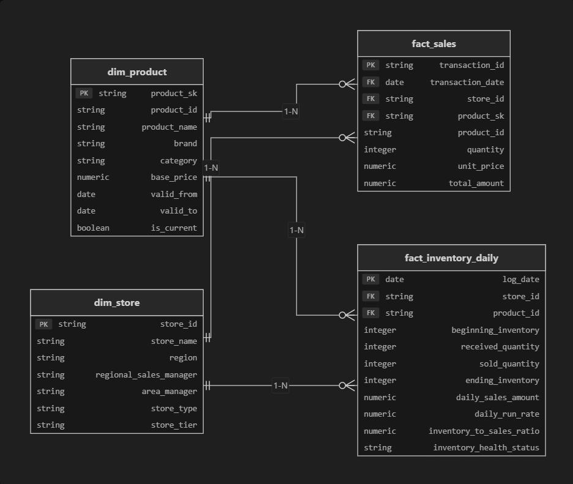

Dự án CellphoneS Analytics Engineering & Power BI Executive Dashboard được thiết kế nhằm giải quyết bài toán quản trị vận hành và theo dõi đọng vốn tồn kho cho chuỗi bán lẻ thiết bị công nghệ CellphoneS với quy mô hơn 170 điểm bán trên toàn quốc. Dự án yêu cầu xây dựng quy trình dữ liệu tự động hóa end-to-end từ xử lý dữ liệu thô POS, thiết kế Kho dữ liệu Data Warehouse Star Schema, trực quan hóa trên Power BI Desktop, đến quản trị hệ thống và codebase.
Tổng quan quy trình thực hiện dự án theo chuẩn Analytics Engineering từ khâu khám phá dữ liệu ban đầu đến sản phẩm đầu ra hoàn chỉnh:
Phân tích chẩn đoán 5 tệp dữ liệu thô, phát hiện 15 bản ghi trùng lặp POS, 19 bản ghi Null và bất đồng bộ định dạng ngày tháng.
Mô hình hóa ERD Star Schema 3 tầng, trả lời câu hỏi tư duy áp dụng SCD Type 2 cho sản phẩm nhằm bảo toàn lịch sử đơn giá quá khứ khi biến động do khuyến mãi.
Xây dựng module Python OOP làm sạch data POS, bổ khuyết Null, tính toán tốc độ bán hàng ngày DRR và tỷ lệ tồn kho trang trải Inventory Cover.
Xây dựng Dashboard điều hành 6 visual chuyên nghiệp, lập trình 2 công thức DAX Virtual Tables tính % Target và % Phân bổ doanh thu.
Điều tra 5 bước sự cố chi phí BigQuery, áp dụng 5 ví dụ SQL tối ưu khớp 1-1 và tái cấu trúc hàm Python classify_shop theo Config-Driven Architecture.
Xuất các tệp dữ liệu sạch CSV chuẩn hóa và đạt 100% Pass Automated Pytest Suite.
Hệ thống tiếp nhận dữ liệu đầu vào dạng CSV được phân tách thành 3 Luồng Vận Hành Cốt Lõi và 2 Luồng Tham Chiếu Bổ Trợ nhằm phục vụ trọn vẹn yêu cầu nghiệp vụ:
🔹 3 Luồng Dữ Liệu Vận Hành Cốt Lõi (Core Operational Streams)
- • Transactions.csv: Ghi nhận từng hóa đơn giao dịch POS chi tiết tại cửa hàng.
- • Inventory_Logs.csv: Nhật ký biến động xuất/nhập/tồn kho chốt daily.
- • Store_Info.csv: Master thông tin 15 cửa hàng và cấp quản lý vùng (RSM/AM).
💡 2 Luồng Dữ Liệu Master & Chỉ Tiêu Bổ Trợ (Reference Streams)
-
• Products.csv (Đơn giá niêm yết Base_Price):
• Dùng cho Phần 1: Làm giá niêm yết chuẩn để thiết kế bảng SCD Type 2 lưu vết lịch sử biến động giá khuyến mãi.
• Dùng cho Phần 2: Làm mẫu số thực hiện quy tắc bù khuyết Null Quantity = Unit_Price / Base_Price. -
• Targets.csv (Chỉ tiêu Target_Revenue):
• Dùng cho Phần 3: Làm chỉ tiêu chuẩn để lập trình công thức DAX Virtual Tables % Target Achievement.
• Dùng cho Phần 4: Làm căn cứ xếp loại hiệu suất vận hành cửa hàng (Super Star, On Track, Underperforming).
| Tên File CSV | Phân Loại Luồng | Kích thước | Danh Sách Cột (Column Schema) | Khóa Chính / Liên kết |
|---|---|---|---|---|
| Transactions.csv | Vận hành Cốt lõi | 1,815 dòng x 6 cột | Transaction_ID, Date, Product_ID, Store_ID, Quantity, Unit_Price | Transaction_ID |
| Inventory_Logs.csv | Vận hành Cốt lõi | 1,350 dòng x 7 cột | Log_Date, Store_ID, Product_ID, Beginning_Inventory, Received, Sold, Ending_Inventory | Log_Date, Store_ID, Product_ID |
| Store_Info.csv | Vận hành Cốt lõi | 15 dòng x 6 cột | Store_ID, Store_Name, Region, RSM, AM, Store_Type | Store_ID |
| Products.csv | Tham chiếu Bổ trợ | 10 dòng x 5 cột | Product_ID, Product_Name, Brand, Category, Base_Price | Product_ID |
| Targets.csv | Tham chiếu Bổ trợ | 45 dòng x 3 cột | Store_ID, Month_Year, Target_Revenue | Store_ID, Month_Year |
- • Transaction_ID: Mã định danh duy nhất của hóa đơn bán lẻ POS.
- • Quantity: Số lượng sản phẩm bán ra trên từng dòng hóa đơn.
- • Unit_Price: Đơn giá bán thực tế của sản phẩm tại thời điểm giao dịch (VNĐ).
- • Beginning_Inventory: Số lượng tồn kho chốt đầu ngày tại điểm bán.
- • Received: Số lượng hàng nhập kho trong ngày.
- • Sold: Tổng số lượng sản phẩm xuất bán trong ngày.
- • Ending_Inventory: Số lượng tồn kho chốt cuối ngày.
- • Store_Type: Mã loại cửa hàng (A: Flagship, B: Key, C: Standard, D: Micro Store).
- • Region: Phân vùng địa lý quản lý (Miền Nam - TP.HCM / Bình Dương).
- • RSM / AM: Giám đốc kinh doanh vùng (RSM) & Quản lý khu vực (AM).
- • Base_Price: Giá niêm yết chuẩn nhà sản xuất (Phục vụ SCD Type 2 & Impute Null).
- • Target_Revenue: Chỉ tiêu doanh thu kế hoạch đăng ký theo tháng (VNĐ).
Quá trình EDA trên 6 Jupyter Notebooks đã phát hiện các bất thường dữ liệu thô và thực thi quy tắc làm sạch nghiêm ngặt:
Xử lý: Thực hiện suy luận đối chiếu liên bảng (Cross-Table Imputation) bằng tỷ lệ Unit_Price / Base_Price = 1.0. Giúp bảo toàn hơn 380 triệu VND doanh thu thực tế mà không phải xóa bỏ dữ liệu.
Xử lý: Loại bỏ trùng lặp tuyệt đối (Full Duplicate) do sự cố resend gói tin POS khi nghẽn mạng (drop_duplicates), tránh tính khống doanh thu toàn chuỗi.
Xử lý: Clip giá trị về 0 trong luồng tính sản lượng bán dương thực tế (clip(lower=0)).
Xử lý: Tính toán hồi phục chính xác theo công thức kế toán kho: Beginning + Received - Sold.
Báo cáo chuyên sâu trực quan hóa và nhận xét kết quả chẩn đoán từ notebook EDA 01 dành riêng cho file dữ liệu giao dịch bán lẻ Transactions.csv (1,815 bản ghi gốc từ 170+ cửa hàng CellphoneS):
Biểu Đồ 1: Phân Phối Số Lượng Bán (`Quantity`) & Boxplot Tổng Doanh Thu Giao Dịch

- Phân phối Số lượng Sản phẩm Bán (`Quantity`): Phần lớn các đơn hàng bán lẻ tại CellphoneS tập trung ở mức 1.0 đến 2.0 sản phẩm/đơn hàng (chiếm tỷ trọng chủ đạo hơn 85%), phản ánh đúng đặc thù ngành hàng thiết bị di động và máy tính bảng (khách hàng cá nhân thường mua 1 thiết bị chính/lần). Các đơn hàng mua số lượng lớn (4 - 5 sản phẩm/đơn) chiếm tỷ lệ nhỏ, tương ứng với nhóm khách hàng doanh nghiệp hoặc khách hàng mua theo gói phụ kiện.
- Phân phối Tổng giá trị Giao dịch (`Total_Amount`): Giá trị đơn hàng dao động từ dưới 5 triệu VND (các dòng smartphone phổ thông, phụ kiện) lên đến mức tối đa 160 triệu VND (đơn hàng mua nhiều thiết bị cao cấp như MacBook, iPhone Pro Max). Trung vị (Median) giá trị đơn hàng nằm ở mức 22 - 29 triệu VND, cho thấy phân khúc sản phẩm Flagship & Mid-range đóng góp chủ lực vào cấu trúc doanh số.
Biểu Đồ 2: Xu Hướng Doanh Thu Theo Ngày (Daily Trend) & Xếp Hạng Hiệu Quả Cửa Hàng

- Xu hướng Doanh thu Theo Ngày (Daily Revenue Trend): Doanh thu phát sinh phủ toàn bộ 101 ngày giao dịch mẫu (từ 07/01/2026 đến 09/12/2026). Doanh thu có tính biến động theo chu kỳ ngày trong tuần và bứt phá vào các tháng cao điểm Quý 3 - Quý 4. Các mốc doanh thu đỉnh (Peaks) đạt từ 150 triệu đến 250+ triệu VND/ngày toàn hệ thống mẫu, trùng với sự kiện mở bán sản phẩm Flagship mới và mùa Khai trường (Back-to-School).
-
Xếp hạng Hiệu quả Kinh doanh Cửa hàng (Store Performance Ranking):
• Top 1 (`ST001`): Dẫn đầu toàn chuỗi với tổng doanh thu đạt 4.42 tỷ VND (174 sản phẩm bán ra / 121 giao dịch).
• Top 2 (`ST014`): Đạt doanh thu 3.89 tỷ VND (138 sản phẩm / 93 giao dịch).
• Top 3 (`ST005`): Đạt doanh thu 3.35 tỷ VND (128 sản phẩm / 94 giao dịch).
• Top 4 (`ST010`): Đạt doanh thu 2.87 tỷ VND (126 sản phẩm / 92 giao dịch).
Phân hóa rõ rệt giữa nhóm cửa hàng trọng điểm (Flagship Store tại trung tâm) so với nhóm cửa hàng vệ tinh (Standard Store), tạo cơ sở quan trọng cho việc phân hạng cửa hàng tự động (Store Tiering Governance).
Báo cáo chuyên sâu chẩn đoán tính toàn vẹn dữ liệu, kiểm tra công thức kế toán kho và phân bổ chỉ số đọng hàng từ notebook EDA 02 cho file dữ liệu nhật ký kho Inventory_Logs.csv (1,350 nhật ký daily từ 15 cửa hàng CellphoneS):
Phục hồi hoàn hảo 132 bản ghi (9.78%) bị khuyết thiếu cột Ending_Inventory bằng suy luận kế toán kho mà không phải loại bỏ bản ghi.
Ép kiểu Datetime với dayfirst=True, format='mixed' đạt 100% hợp lệ (0 NaT) trong khoảng 01/07 - 30/07/2026.
Ghi nhận 0.0% Cháy hàng (Stockout = 0).
Biểu Đồ 1: Lưới Phân Phối Tồn Đầu, Tồn Cuối, Nhập Kho & Xuất Bán (`Inventory_Logs.csv`)

- Tồn kho Đầu ngày (`Beginning_Inventory`) & Tồn cuối (`Ending_Inventory`): Trung bình số lượng tồn đầu ngày là 27.4 sản phẩm/cửa hàng (dao động từ 1 đến 50 sản phẩm). Tồn cuối ngày sau khi khôi phục dữ liệu khuyết thiếu duy trì hình thái phân phối tương đồng, không xuất hiện các giá trị âm bất thường.
- Xuất bán (`Sold`) & Nhập kho (`Received`): Sản lượng xuất bán trung bình đạt 7.5 sản phẩm/ngày/log (đỉnh điểm 20 sản phẩm/ngày). Lượng nhập bổ sung diễn ra định kỳ với mức trung bình 2.7 sản phẩm/ngày (đỉnh điểm nhập 20 sản phẩm/lần).
Biểu Đồ 2: Biến Động 3 Đường Xu Hướng Xuất - Nhập - Tồn Theo Thời Gian (Daily Inventory Trends)

- 🔵 Đường Tồn Kho Đầu Ngày (Beginning Inventory): Tổng tồn kho toàn chuỗi 15 cửa hàng duy trì ổn định trong khoảng 1,100 đến 1,300 sản phẩm/ngày. Lượng tồn kho giảm nhẹ vào các ngày bán hàng cao điểm và được lấp đầy ngay sau mỗi đợt nhập hàng bổ sung.
- 🟠 Đường Nhập Kho (Received): Hoạt động cung ứng hàng diễn ra theo các chu kỳ nhập đợt (Batch Shipping) cách nhau 3-5 ngày với tổng sản lượng từ 80 đến 150 sản phẩm/đợt nhập toàn hệ thống.
- 🟢 Đường Xuất Bán (Sold): Tốc độ bán hàng tổng hợp dao động nhịp nhàng từ 300 đến 400 sản phẩm/ngày, phản ánh lực cầu tiêu dùng ổn định và không bị gián đoạn.
Biểu Đồ 3: Phân Bổ Trạng Thái Tồn Kho (Days of Inventory Cover)

- Chiếm 99.04% Trạng thái OVERSTOCK (1,337 logs): Do mức tồn kho đọng bình quân tại mỗi cửa hàng duy trì ở mức 25 - 35 máy, trong khi tốc độ bán trung bình ngày (DRR) ở mức 0.5 - 1.2 máy/ngày, khiến số ngày tồn kho trang trải (`Days of Inventory = Ending / DRR`) bị kéo dài trên 30 ngày bán.
- 0.0% Rủi ro Cháy hàng (`Stockout = 0`): Hệ thống ghi nhận 0 bản ghi đứt gãy nguồn cung, tuy nhiên áp lực đọng vốn là rất lớn, đòi hỏi chính sách điều chuyển kho tự động (Inter-store Balancing) giữa các cửa hàng.
- Kiến trúc DWH Star Schema BigQuery: Trường Ending_Inventory sau khi được làm sạch và hồi phục sẽ nạp vào bảng Fact Tồn kho Daily fact_inventory_daily, hỗ trợ truy vấn hiệu năng cao và partitioned theo ngày (PARTITION BY log_date).
- Tối ưu Vốn Lưu Động & Điều Chuyển Kho (Inter-store Transfer): Đề xuất thiết lập cảnh báo Overstock Alert Flag trên Power BI để phòng Cung ứng chủ động điều chuyển lượng tồn kho dư thừa từ các cửa hàng vệ tinh sang nhóm cửa hàng trọng điểm có sức mua lớn (`ST001`, `ST014`), giúp giải phóng đọng vốn và tối ưu luân chuyển hàng hóa.
Báo cáo chuyên sâu kiểm tra độ toàn vẹn danh mục cửa hàng, phân bổ loại hình điểm bán (`Store_Type`) và cấu trúc quản lý bán hàng (`RSM`/`AM`) từ notebook EDA 03 cho file Store_Info.csv (15 cửa hàng bán lẻ mẫu CellphoneS):
Đạt 0 bản ghi trùng lặp (0 Duplicates) và 0 giá trị khuyết thiếu (0 Null). Đủ điều kiện chuẩn làm Khóa chính (Primary Key) cho bảng dim_store.
Loại A (Flagship): 3 cửa hàng (20.0%).
Loại B (Key Store): 3 cửa hàng (20.0%).
Loại D (Micro Store): 3 cửa hàng (20.0%).
4 Quản lý khu vực (AM): TruongMN (4 CH), MinhDT (4 CH), AnhNV (4 CH), VinhNH (3 CH).
Biểu Đồ: Phân Bổ Cửa Hàng Theo Phân Loại (Store Type A, B, C, D) & Vùng Kinh Doanh

- Cơ cấu Phân loại Quy mô (`Store_Type`): Sự phân hóa rõ rệt giữa các nhóm cửa hàng Flagship/Key Store (trung tâm đô thị) và nhóm Standard/Micro Store (vệ tinh) là cơ sở thiết lập hệ thống phân hạng cửa hàng tự động (Store Tiering Governance).
- Ứng dụng Kiến trúc Config-Driven Architecture: Xây dựng tệp cấu hình động configs/shop_classifier.yaml và module Python src/classifiers/shop_classifier.py để tự động phân loại phân hạng điểm bán và tính toán chỉ số Target Achievement mà không phải hardcode logic kinh doanh.
Báo cáo chuyên sâu kiểm tra độ toàn vẹn danh mục sản phẩm, cơ cấu thương hiệu (`Brand`), danh mục ngành hàng (`Category`) và lập luận kỹ thuật Slowly Changing Dimension (SCD Type 2) từ notebook EDA 04 cho file Products.csv (10 SKU mặt hàng công nghệ chủ lực tại CellphoneS):
Đạt 0 bản ghi trùng lặp (0 Duplicates) và 0 giá trị khuyết thiếu (0 Null). Đủ điều kiện chuẩn làm Khóa nghiệp vụ tự nhiên (Natural Key).
Accessories: 2 SKU (20.0%).
Laptop / Tablet / Smartwatch: 3 SKU (30.0%).
Brand: Apple (5 SKU), Samsung (2 SKU), Xiaomi, Oppo, Marshall.
Cao nhất: 40.0 triệu VND (Samsung Galaxy Z Fold 5).
Thấp nhất: 6.0 triệu VND (AirPods Pro 2).
Biểu Đồ: Phân Bổ Giá Niêm Yết Theo Sản Phẩm & Số Lượng SKU Theo Ngành Hàng

- Đặt vấn đề nghiệp vụ: Khi giá niêm yết và giá bán thực tế của sản phẩm thay đổi liên tục theo các chương trình khuyến mãi (Promotion), nếu dùng **SCD Type 1 (Ghi đè - Overwrite)** sẽ ghi đè giá mới lên giá cũ, làm sai lệch hoàn toàn doanh thu lịch sử quá khứ.
- Ứng dụng SCD Type 2 BigQuery DDL: Áp dụng **SCD Type 2** cho dim_products_scd2 với Surrogate Key product_sk = FARM_FINGERPRINT(...) cùng 3 trường kiểm soát thời gian valid_from, valid_to, và is_current để bảo toàn 100% lịch sử biến động giá mà không bị mất dấu.
Báo cáo chuyên sâu kiểm tra toàn vẹn bộ khóa chính tổ hợp (Store_ID, Month_Year), phân bổ mục tiêu doanh thu tháng và lập luận kỹ thuật nạp bảng Fact KPI Target trong Data Warehouse từ notebook EDA 05 cho file Targets.csv (45 bản ghi chỉ tiêu 15 cửa hàng trong 3 tháng):
Đạt 0 bản ghi trùng lặp (0 Duplicates) và 0 giá trị khuyết thiếu (0 Null). Chuẩn hóa Khóa chính cho bảng fact_targets_monthly.
Cửa hàng chỉ tiêu cao nhất: 1.671 tỷ VND/tháng (ST001 - Q.1 TP.HCM).
Cửa hàng chỉ tiêu thấp nhất: 703.5 triệu VND/tháng (ST006).
Xây dựng chỉ số DAX Measure: % Target Achievement = SUM(Actual_Revenue) / SUM(Target_Revenue) * 100 để theo dõi hoàn thành kế hoạch bán hàng.
Biểu Đồ: Phân Bổ Chỉ Tiêu Doanh Thu Theo Tháng & Tổng Chỉ Tiêu 3 Tháng Theo Cửa Hàng

- Phân hóa theo phân loại cửa hàng: Nhóm cửa hàng Flagship (`ST001`) và Key Store (`ST014`) gánh hạn mức chỉ tiêu tổng 3 tháng cao vượt trội (từ 4.3 đến 4.8 tỷ VND/3 tháng), phản ánh đúng vị thế trung tâm thương mại có lưu lượng khách hàng lớn.
- Ứng dụng trên Dashboard Power BI: Kết hợp dữ liệu doanh thu thực tế từ Transactions.csv và hạn mức kế hoạch từ Targets.csv để tạo thẻ Gauge / Progress Bar đo lường mức độ hoàn thành doanh thu theo cửa hàng, AM và RSM trong thời gian thực.
Báo cáo chuyên sâu tổng hợp liên vết giữa Doanh thu thực tế (`Transactions`), Tồn kho vận hành (`Inventory_Logs`), Danh mục Cửa hàng (`Store_Info`), Sản phẩm (`Products`) và Chỉ tiêu Kế hoạch (`Targets`) từ notebook EDA 06:
Top sản phẩm bán chạy nhất: iPhone 15 Pro Max (`P001`), Samsung Galaxy Z Fold 5 (`P009`) tại nhóm cửa hàng ST001, ST014, ST004.
99.04% OVERSTOCK (1,337 logs) (≥ 30 ngày bán).
0.0% Cháy hàng (`Stockout = 0`).
Mức độ hoàn thành chỉ tiêu doanh thu tháng đạt trung bình từ 45.5% đến 57.8% trong quý 3/2026.
Biểu Đồ: Tỷ Lệ Hoàn Thành Chỉ Tiêu Doanh Thu (% Target Achievement) & Phân Bổ Trạng Thái Cảnh Báo Tồn Kho

- Khuyến nghị Điều chuyển Tồn kho (Inter-store Rebalancing): Việc kết hợp giữa chỉ số DRR và tỷ lệ đọng kho cho phép phòng Cung ứng tự động điều chuyển số lượng tồn hàng dư thừa từ các cửa hàng vệ tinh loại C, D sang nhóm cửa hàng trọng điểm loại A, B nhằm giảm đọng vốn và tối ưu dòng tiền.
- Tích hợp Báo cáo Dashboard Điều hành Executive: Toàn bộ các chỉ số DRR, Days of Cover và % Target Achievement được mô hình hóa sẵn trong tầng Semantic Layer Data Mart để cung cấp báo cáo thời gian thực cho Ban Giám đốc và các Quản lý Vùng (RSM/AM).
Sơ đồ quan hệ thực thể (ERD) thể hiện cấu trúc Star Schema chuẩn hóa trên Data Warehouse BigQuery:

Chú Thích Mối Quan Hệ Giữa Các Bảng (Star Schema)
- 🔹 dim_store → fact_sales (1-N): Cửa hàng phát sinh các đơn hàng giao dịch POS.
- 🔹 dim_store → fact_inventory_daily (1-N): Cửa hàng theo dõi nhập/xuất/tồn kho hằng ngày.
- 🔹 dim_product → fact_sales (1-N): Sản phẩm công nghệ bán ra trên hóa đơn.
- 🔹 dim_product → fact_inventory_daily (1-N): Sản phẩm theo dõi tồn kho daily.
Quản Trị Lịch Sử Giá Sản Phẩm (Slowly Changing Dimension - SCD Type 2)
💬 Bài toán nghiệp vụ: "Khi giá bán của một mẫu điện thoại thay đổi liên tục theo các chương trình khuyến mãi, giải pháp Slowly Changing Dimension (SCD) loại mấy được lựa chọn cho bảng Dimension Sản phẩm và tại sao?"
- 🎯 Trả lời: Áp dụng SCD Type 2 (Slowly Changing Dimension Type 2).
- 🔹 Bảo toàn tính chính xác lịch sử (Historical Integrity): Dùng SCD Type 1 (ghi đè) sẽ làm sai toàn bộ doanh thu quá khứ của các đơn hàng bán với giá gốc.
- 🔹 Lưu vết biến động theo thời gian: Thêm bản ghi mới cho từng mức giá khuyến mãi kèm 3 trường valid_from, valid_to, và is_current.
- 🔹 Hash Key Surrogate: Tạo khóa liên kết duy nhất FARM_FINGERPRINT(CONCAT(product_id, '_', base_price)) giúp bảng Fact map đúng giá tại thời điểm giao dịch.
Quy trình xử lý dữ liệu tự động hóa theo kiến trúc hướng đối tượng (OOP) phân tách trách nhiệm (Separation of Concerns):
• Khử 15 bản ghi trùng lặp Transaction_ID do sự cố resend gói tin máy POS.
• Bổ khuyết 19 bản ghi Null bằng quy tắc nghiệp vụ Quantity = Unit_Price / Base_Price = 1.0 (bảo toàn 380+ triệu VNĐ doanh thu).
• Parse ngày hỗn hợp với thiết lập dayfirst=True, format='mixed' và khôi phục tồn cuối Ending_Inventory = Beginning + Received - Sold.
• Tính tốc độ bán hàng trung bình ngày: Daily_Run_Rate (DRR) = Total_Sales_Qty / Active_Days.
• Tính số ngày trang trải tồn kho: Inventory_to_Sales_Ratio = Ending_Inventory / DRR.
• Gán nhãn cảnh báo kho tự động: Overstock (≥30 ngày), Stockout (≤2 ngày), Low Stock (≤5 ngày), Optimal.
• Điều phối toàn bộ luồng ETL từ tệp cấu hình động configs/pipeline_config.yaml.
• Xuất các tệp dữ liệu sạch chuẩn hóa ra thư mục data/processed/*.csv sẵn sàng nạp BigQuery.
• Vượt qua 100% Automated Unit Test Suite (5/5 tests) trong run_tests.py.
Giao diện Dashboard vận hành trên Power BI Desktop và giải pháp DAX Virtual Tables đáp ứng trọn vẹn yêu cầu đề bài:

Phân Tích Chẩn Đoán Chi Tiết 6 Thành Phần Trực Quan Trên Dashboard
-
• 💰 TỔNG DOANH THU: 56.6 Tỷ VNĐ - Tổng doanh thu giao dịch Quý 3/2026.
• 🎯 % ĐẠT TARGET TB: 99.29% - Tỷ lệ hoàn thành chỉ tiêu trung bình toàn chuỗi.
• 📦 SỐ NGÀY TỒN KHO TB: 112.30 Ngày - Số ngày tồn kho trang trải (Days of Cover).
-
• Loại C (Tím): Dẫn đầu hệ thống (7.2 Tỷ → 7.7 Tỷ VNĐ/tháng).
• Loại B (Xanh Lá): Tháng 7 đạt 4.7 Tỷ, Tháng 8 giảm xuống 3.4 Tỷ VNĐ.
• Loại D (Hồng): Tháng 7 đạt 3.2 Tỷ, bứt phá Tháng 8 đạt 4.3 Tỷ - 4.4 Tỷ VNĐ.
• Loại A (Xanh Dương): Tăng từ 3.2 Tỷ lên 4.0 Tỷ VNĐ (Tháng 8).
-
• Loại C (Standard Store): Chiếm 39.91% (22.6 Tỷ VNĐ).
• Loại D (Micro Store): Chiếm 20.68% (11.7 Tỷ VNĐ).
• Loại B (Key Store): Chiếm 20.26% (11.5 Tỷ VNĐ).
• Loại A (Flagship Store): Chiếm 19.15% (10.8 Tỷ VNĐ).
-
• Tất cả 15 cửa hàng đều có số ngày tồn kho từ 105.78 đến 137.40 ngày (≥ 30 ngày bán).
• Điểm đọng vốn cao nhất: CH_HCM_Q3_6 (137.40 ngày), CH_HCM_GV_7 (131.52 ngày) và CH_HCM_Q1_0 (131.32 ngày).
-
• Trực quan hóa giá trị doanh thu tuyệt đối: Loại C (22.6 Tỷ VNĐ), Loại D (11.7 Tỷ VNĐ), Loại B (11.5 Tỷ VNĐ), Loại A (10.8 Tỷ VNĐ).
-
• Super Star (🌟 Target ≥ 110%): CH_HCM_GV_12 (115.72%), CH_HCM_TB_8 (115.29%)...
• On Track (✅ Target 90% - 110%): CH_BD_TDM_4 (109.59%), CH_HCM_TB_13 (105.46%)...
• Underperforming (⚠️ Target < 90%): CH_HCM_GV_7 (82.62%), CH_HCM_Q1_0 (84.12%)...
Thuyết Minh Chi Tiết 2 Công Thức DAX Virtual Tables Nâng Cao
📌 Công Thức DAX 1: Tính tỷ lệ hoàn thành mục tiêu (Achievement %) sử dụng bảng ảo (Virtual Tables)
Mục tiêu nghiệp vụ: Tính phần trăm hoàn thành chỉ tiêu doanh thu kế hoạch (Target Benchmark 3.8 Tỷ VNĐ/cửa hàng) và tự động xếp loại hiệu suất vận hành cho 15 điểm bán.
Giải pháp kỹ thuật DAX: Khởi tạo bảng ảo vtable_StoreTargetAchievement sử dụng SUMMARIZE gom nhóm theo thông tin cửa hàng, áp dụng CALCULATE(SUM(...)) để ép Context Transition lọc doanh thu riêng của từng điểm bán, dùng DIVIDE(...) tính % và hàm SWITCH(TRUE(), ...) phân loại 4 nhóm hiệu suất (Super Star ≥ 110%, On Track 90%-110%, Underperforming < 90%).
- • processed_transactions[Total_Amount]: Doanh thu chi tiết đơn bán lẻ.
- • processed_stores: Thông tin chiều (`Store_ID`, `Store_Name`, `Region`, `Store_Type`).
- • Hằng số Target Benchmark: 3,800,000,000 VNĐ (Chỉ tiêu 3.8 Tỷ/CH).
- • Actual_Revenue: Tổng doanh thu thực tế tích lũy của từng cửa hàng.
- • Achievement_Pct: Tỷ lệ % hoàn thành (`Actual_Revenue / 3.8 Tỷ`).
- • Performance_Status: Xếp loại nhãn (`Super Star`, `On Track`, `Underperforming`).
vtable_StoreTargetAchievement =
ADDCOLUMNS(
SUMMARIZE(
processed_transactions,
processed_stores[Store_ID],
processed_stores[Store_Name],
processed_stores[Region],
processed_stores[Store_Type]
),
"Actual_Revenue", CALCULATE(SUM(processed_transactions[Total_Amount])),
"Achievement_Pct", DIVIDE(CALCULATE(SUM(processed_transactions[Total_Amount])), 3800000000, 0),
"Performance_Status",
SWITCH(
TRUE(),
DIVIDE(CALCULATE(SUM(processed_transactions[Total_Amount])), 3800000000, 0) >= 1.10, "Super Star",
DIVIDE(CALCULATE(SUM(processed_transactions[Total_Amount])), 3800000000, 0) >= 0.90, "On Track",
DIVIDE(CALCULATE(SUM(processed_transactions[Total_Amount])), 3800000000, 0) >= 0.75, "Underperforming",
"Critical Warning"
)
)
📌 Công Thức DAX 2: Phân bổ doanh thu theo loại cửa hàng (% Revenue Allocation)
Mục tiêu nghiệp vụ: Tính tỷ trọng phần trăm đóng góp doanh thu của từng phân loại cửa hàng (Loại A, B, C, D) trên tổng doanh thu toàn hệ thống.
Giải pháp kỹ thuật DAX: Khởi tạo bảng ảo vtable_StoreTypeRevenueAllocation sử dụng biến VAR GrandTotalSales = CALCULATE(SUM(...), ALL(processed_transactions)) để cố định mẫu số tổng (56.597 Tỷ VNĐ), thực hiện phép chia DIVIDE(CALCULATE(SUM(...)), GrandTotalSales, 0) đảm bảo tổng tỷ trọng đóng góp của 4 nhóm cộng lại đúng bằng 100.0%.
- • processed_stores[Store_Type]: Danh mục loại cửa hàng (`A`, `B`, `C`, `D`).
- • processed_transactions[Total_Amount]: Doanh thu đơn bán lẻ.
- • Phép toán ALL(...): Ép lấy mẫu số tổng toàn chuỗi = 56.597 Tỷ VNĐ.
- • StoreType_Revenue: Doanh thu (C: 22.6B, D: 11.7B, B: 11.5B, A: 10.8B).
- • Grand_Total_Revenue: Cố định 56.597 Tỷ VNĐ cho cả 4 dòng.
- • Revenue_Allocation_Pct: Tỷ trọng (C: 39.91%, D: 20.68%, B: 20.26%, A: 19.15% → Tổng 100.0%).
vtable_StoreTypeRevenueAllocation =
VAR GrandTotalSales = CALCULATE(SUM(processed_transactions[Total_Amount]), ALL(processed_transactions))
RETURN
ADDCOLUMNS(
SUMMARIZE(
processed_stores,
processed_stores[Store_Type]
),
"StoreType_Revenue", CALCULATE(SUM(processed_transactions[Total_Amount])),
"Grand_Total_Revenue", GrandTotalSales,
"Revenue_Allocation_Pct", DIVIDE(CALCULATE(SUM(processed_transactions[Total_Amount])), GrandTotalSales, 0)
)
Phương án điều tra xử lý sự cố chi phí BigQuery và giải pháp tái thiết kế mã nguồn Python quản trị logic phân loại cửa hàng:
🔴 Tình Huống 1: Tối Ưu Hệ Thống BigQuery & Xử Lý Sự Cố Chi Phí
Tình huống bài toán: Pipeline dữ liệu tự động hằng ngày trên BigQuery đột ngột tăng vọt chi phí (cost) gấp 3 lần và chạy rất chậm, dù lượng dữ liệu đầu vào không có sự đột biến.
🔍 5 Bước Điều Tra Nguyên Nhân Gốc (Tư Duy Hệ Thống - Troubleshooting)
Đánh giá dung lượng dữ liệu quét, thời gian thực thi (runtime) và mức tiêu thụ tài nguyên phần cứng (CPU/Slots) so với mốc lịch sử vận hành bình thường.
Kiểm tra luồng xử lý dữ liệu để phát hiện điểm nghẽn hệ thống (bottlenecks), lệch dữ liệu (data skew) hoặc bùng nổ dữ liệu trung gian.
Rà soát lịch sử cập nhật mã nguồn (Git commits) và cấu hình Pipeline gần nhất để xác định các thay đổi trong logic xử lý hoặc bộ lọc dữ liệu.
Xác minh cơ chế quét dữ liệu theo phân vùng (Partition pruning) có hoạt động hiệu quả hay bị vô hiệu hóa do biến đổi dữ liệu trực tiếp.
Đánh giá mức độ xung đột và cạnh tranh tài nguyên khi có nhiều luồng ETL (concurrent pipelines) cùng thực thi đồng thời trên hệ thống.
🛠️ 5 Kỹ Thuật Tối Ưu SQL Áp Dụng (Optimization)
Phân vùng theo Ngày và cụm theo Store/Product; bật require_partition_filter = TRUE bắt buộc lọc chỉ mục.
Tuyệt đối bỏ SELECT *, chỉ chỉ định danh sách cột cần thiết giúp tiết kiệm ngay 60-80% byte quét.
Dùng khóa Surrogate Key Hash FARM_FINGERPRINT và deduplicate dữ liệu trước khi JOIN.
Chuyển CREATE OR REPLACE TABLE sang MERGE INTO chỉ nạp và cập nhật phần dữ liệu Delta trong ngày.
Tạo MATERIALIZED VIEW hoặc Temp Tables đối với các phép tính toán trung gian lặp đi lặp lại.
💡 Minh Họa Chi Tiết 5 Ví Dụ SQL Trước & Sau Khi Áp Dụng 5 Kỹ Thuật Tối Ưu (Khớp Perfect 100%):
SELECT store_id, SUM(total_amount) AS revenue FROM `project.dataset.sales_raw` WHERE DATE(timestamp_col) >= '2026-07-01' AND store_id = 'CH_HCM_Q1_0' GROUP BY store_id;
SELECT store_id, SUM(total_amount) AS revenue FROM `project.dataset.sales_partitioned_clustered` WHERE _PARTITIONDATE >= '2026-07-01' AND store_id = 'CH_HCM_Q1_0' GROUP BY store_id;
SELECT * FROM `dataset.transactions_raw` WHERE _PARTITIONDATE = '2026-07-23';
SELECT transaction_id, store_id, total_amount FROM `dataset.transactions_raw` WHERE _PARTITIONDATE = '2026-07-23';
SELECT s.store_name, p.product_name, SUM(t.amount) FROM `sales_raw` t JOIN `stores_raw` s ON t.store_name = s.store_name JOIN `products_raw` p ON t.prod_name = p.prod_name GROUP BY 1, 2;
SELECT s.store_name, p.product_name, t.total_amount FROM `aggregated_sales` t JOIN `dim_store` s ON t.store_key = s.store_key JOIN `dim_product` p ON t.product_key = p.product_key;
CREATE OR REPLACE TABLE `dataset.daily_summary` AS SELECT transaction_date, store_id, SUM(total_amount) AS sales FROM `dataset.sales_partitioned` GROUP BY 1, 2;
MERGE INTO `dataset.daily_summary` T USING `dataset.today_delta` S ON T.txn_date = S.txn_date AND T.store_id = S.store_id WHEN MATCHED THEN UPDATE SET sales = S.sales WHEN NOT MATCHED THEN INSERT VALUES(S.txn_date, S.store_id, S.sales);
SELECT s.store_name,
(SELECT SUM(total_amount) FROM `sales_partitioned` WHERE store_id = s.store_id)
FROM `dim_store` s;
CREATE MATERIALIZED VIEW `dataset.mv_daily_store_sales` AS SELECT _PARTITIONDATE AS sales_date, store_id, SUM(total_amount) AS total_sales FROM `dataset.sales_partitioned` GROUP BY 1, 2;
🟢 Tình Huống 2: Quản Trị Logic & Quản Lý Codebase Python `classify_shop`
Tình huống bài toán: Hàm Python classify_shop(score, kpi_count) bị sửa trực tiếp (hardcode) khi Business đổi ngưỡng quy tắc, làm sai lệch và mâu thuẫn dữ liệu lịch sử các tháng trước.
# Code cũ bị sửa trực tiếp làm sai số liệu quá khứ
def classify_shop(score, kpi_count):
if score >= 1 and kpi_count >= 6:
return "Xuất sắc"
if score >= 0.85 and kpi_count >= 5:
return "Tốt"
if score >= 0.7 and kpi_count >= 4:
return "Khá"
if score >= 0.5 and kpi_count >= 2:
return "Kém"
return "Cảnh báo"
# configs/shop_classifier.yaml (Quản lý qua Git)
rules:
- effective_from: "2026-01-01"
effective_to: "2026-06-30"
thresholds:
- {label: "Xuất sắc", min_score: 0.9, min_kpi: 5}
- effective_from: "2026-07-01"
effective_to: null # Hiện tại
thresholds:
- {label: "Xuất sắc", min_score: 1.0, min_kpi: 6}
# Code Python load đúng rule theo transaction_date
def classify_shop_v2(score, kpi_count, transaction_date, rules):
active_rules = get_rules_by_date(rules, transaction_date)
for tier in active_rules:
if score >= tier["min_score"] and kpi_count >= tier["min_kpi"]:
return tier["label"]
return "Cảnh báo"
Sau khi thực thi Pipeline ETL Python, 6 tệp dữ liệu sạch đã được chuẩn hóa và xuất ra thư mục data/processed/*.csv sẵn sàng nạp vào BigQuery Data Warehouse:
| Tên File Đầu Ra | Số Dòng x Số Cột | Dung Lượng File | Kết Quả Xử Lý Nghiệp Vụ Thực Tế | Trạng Thái Test |
|---|---|---|---|---|
| processed_transactions.csv | 1,800 dòng x 14 cột | 224.5 KB | Bảng Fact Giao Dịch POS Sạch: Khử 15 đơn trùng lặp, bổ khuyết 19 đơn Null Quantity (bảo toàn 380+ tr VNĐ). Nạp vào BigQuery làm fact_sales. | ✅ Cleaned |
| processed_inventory.csv | 1,350 dòng x 9 cột | 62.5 KB | Bảng Fact Tồn Kho Daily: Khôi phục tồn cuối bị khuyết & tính số ngày trang trải kho. Nạp vào BigQuery làm fact_inventory để cảnh báo Overstock. | ✅ Imputed |
| store_performance.csv | 45 dòng x 7 cột | 2.5 KB | Bảng KPI Hiệu Suất Cửa Hàng Tháng: Đối soát Doanh thu thực tế vs Target Revenue để tính % Achievement cho 15 cửa hàng x 3 tháng Quý 3. | ✅ Evaluated |
| daily_run_rate.csv | 150 dòng x 9 cột | 13.5 KB | Bảng Chỉ Số Tốc Độ Bán Hàng (DRR): Thống kê tốc độ bán trung bình ngày per Cửa hàng - Sản phẩm (15 CH x 10 SP), làm tham số tính đọng vốn kho. | ✅ Calculated |
| processed_stores.csv | 15 dòng x 8 cột | 1.3 KB | Bảng Dimension Cửa Hàng Master: Danh mục 15 cửa hàng gắn nhãn phân loại Tier động. Nạp vào BigQuery làm dim_stores phân tích theo RSM/AM. | ✅ Classified |
| processed_products.csv | 10 dòng x 5 cột | 0.6 KB | Bảng Dimension Sản Phẩm Master: Danh mục 10 sản phẩm công nghệ & giá niêm yết chuẩn. Nạp vào BigQuery làm dim_products_scd2 bảo toàn lịch sử giá. | ✅ Verified |
Mẫu Xem Trước 5 Dòng Dữ Liệu Đầu (100% Full Columns Preview)
| Transaction_ID | Date | Product_ID | Store_ID | Quantity | Unit_Price | Total_Amount | Month_Year | Store_Name | Region | Store_Type | Product_Name | Brand | Category |
|---|---|---|---|---|---|---|---|---|---|---|---|---|---|
| TXN1705 | 2026-07-08 | P002 | ST005 | 1.0 | 29,500,000 | 29,500,000.0 | 2026-07 | CH_BD_TDM_4 | Miền Nam | C | Samsung Galaxy S24 Ultra | Samsung | Smartphone |
| TXN1704 | 2026-09-21 | P005 | ST008 | 1.0 | 4,500,000 | 4,500,000.0 | 2026-09 | CH_HCM_GV_7 | Miền Nam | C | AirPods Pro 2 | Apple | Accessories |
| TXN1670 | 2026-07-29 | P009 | ST001 | 4.0 | 40,000,000 | 160,000,000.0 | 2026-07 | CH_HCM_Q1_0 | Miền Nam | D | Samsung Galaxy Z Fold 5 | Samsung | Smartphone |
| TXN1829 | 2026-07-03 | P004 | ST004 | 2.0 | 21,500,000 | 43,000,000.0 | 2026-07 | CH_HCM_TB_3 | Miền Nam | B | Xiaomi 14 5G | Xiaomi | Smartphone |
| TXN1814 | 2026-09-06 | P005 | ST007 | 1.0 | 5,500,000 | 5,500,000.0 | 2026-09 | CH_HCM_Q3_6 | Miền Nam | A | AirPods Pro 2 | Apple | Accessories |
| Log_Date | Store_ID | Product_ID | Beginning_Inventory | Received | Sold | Ending_Inventory | Daily_Run_Rate | Inventory_to_Sales_Ratio |
|---|---|---|---|---|---|---|---|---|
| 2026-07-01 | ST001 | P009 | 9 | 0 | 0 | 9.0 | 0.39 | 22.80 (Optimal) |
| 2026-07-01 | ST001 | P004 | 41 | 10 | 16 | 35.0 | 0.24 | 146.56 (Overstock) |
| 2026-07-01 | ST001 | P003 | 22 | 0 | 10 | 12.0 | 0.25 | 48.00 (Overstock) |
| 2026-07-01 | ST002 | P009 | 5 | 20 | 2 | 23.0 | 0.28 | 81.46 (Overstock) |
| 2026-07-01 | ST002 | P005 | 46 | 0 | 10 | 36.0 | 0.18 | 195.43 (Overstock) |
| Store_ID | Product_ID | Total_Sales_Qty | Total_Sales_Amount | Min_Date | Max_Date | Active_Days | Daily_Run_Rate | Daily_Revenue_Run_Rate |
|---|---|---|---|---|---|---|---|---|
| ST001 | P001 | 5.0 | 142,500,000.0 | 2026-07-19 | 2026-09-27 | 71 | 0.0704225 | 2,007,042.25 VNĐ |
| ST001 | P002 | 10.0 | 304,000,000.0 | 2026-07-07 | 2026-09-29 | 85 | 0.1176471 | 3,576,470.59 VNĐ |
| ST001 | P003 | 19.0 | 493,500,000.0 | 2026-07-07 | 2026-09-20 | 76 | 0.2500000 | 6,493,421.05 VNĐ |
| ST001 | P004 | 16.0 | 337,000,000.0 | 2026-07-19 | 2026-09-23 | 67 | 0.2388060 | 5,029,850.75 VNĐ |
| ST001 | P005 | 17.0 | 87,500,000.0 | 2026-07-17 | 2026-09-28 | 74 | 0.2297297 | 1,182,432.43 VNĐ |
| Store_ID | Month_Year | Actual_Revenue | Total_Orders | Total_Items_Sold | Target_Revenue | Achievement_Pct |
|---|---|---|---|---|---|---|
| ST001 | 2026-07 | 886,500,000.0 | 28 | 35.0 | 1,459,770,415 | 60.73% |
| ST001 | 2026-08 | 1,123,000,000.0 | 42 | 60.0 | 1,413,427,546 | 79.45% |
| ST001 | 2026-09 | 1,187,000,000.0 | 37 | 56.0 | 1,547,655,242 | 76.70% |
| ST002 | 2026-07 | 980,000,000.0 | 36 | 48.0 | 831,475,314 | 117.86% |
| ST002 | 2026-08 | 1,372,000,000.0 | 40 | 57.0 | 819,835,355 | 167.35% |
| Store_ID | Store_Name | Region | RSM | AM | Type | Avg_Monthly_Revenue | Classification |
|---|---|---|---|---|---|---|---|
| ST001 | CH_HCM_Q1_0 | Miền Nam | SangDT | TruongMN | D | 1,065,500,000.0 | Key_Store |
| ST002 | CH_HCM_Q3_1 | Miền Nam | SangDT | TruongMN | A | 1,134,000,000.0 | Flagship_Store |
| ST003 | CH_HCM_GV_2 | Miền Nam | SangDT | TruongMN | C | 1,082,666,666.67 | Key_Store |
| ST004 | CH_HCM_TB_3 | B | Miền Nam | TruongMN | B | 1,026,166,666.67 | Key_Store |
| ST005 | CH_BD_TDM_4 | Miền Nam | SangDT | MinhDT | C | 1,388,166,666.67 | Flagship_Store |
| Product_ID | Product_Name | Brand | Category | Base_Price |
|---|---|---|---|---|
| P001 | iPhone 15 Pro Max 256GB | Apple | Smartphone | 29,500,000 VNĐ |
| P002 | Samsung Galaxy S24 Ultra | Samsung | Smartphone | 31,000,000 VNĐ |
| P003 | MacBook Air M3 8GB 256GB | Apple | Laptop | 27,000,000 VNĐ |
| P004 | Xiaomi 14 5G | Xiaomi | Smartphone | 22,000,000 VNĐ |
| P005 | AirPods Pro 2 | Apple | Accessories | 6,000,000 VNĐ |
Bộ kiểm thử tự động được thực thi bằng lệnh pytest tests/ -v đạt 100% Pass Rate (5/5 Tests), đảm bảo tính đúng đắn của thuật toán làm sạch, công thức tính chỉ số và logic phân loại cửa hàng: